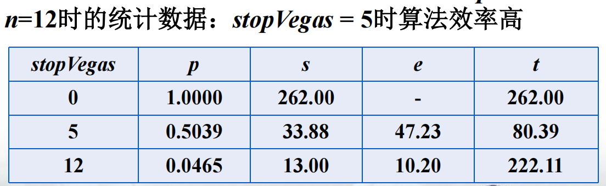
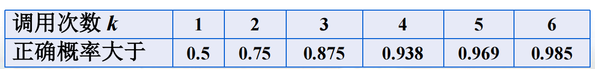
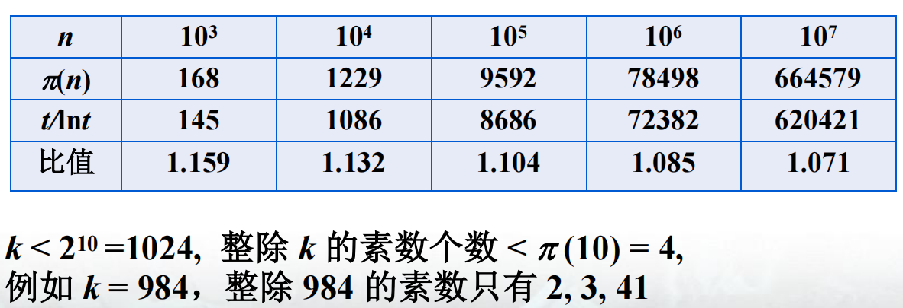
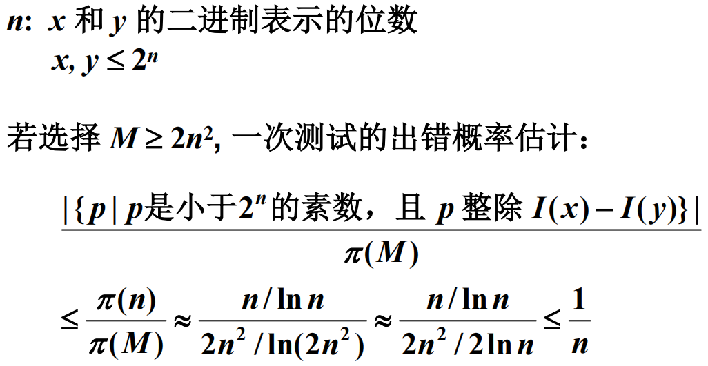
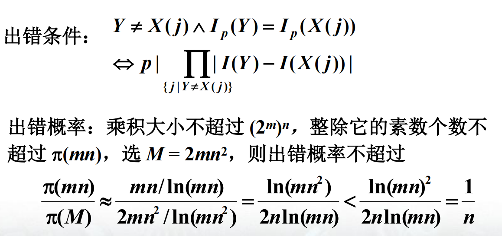
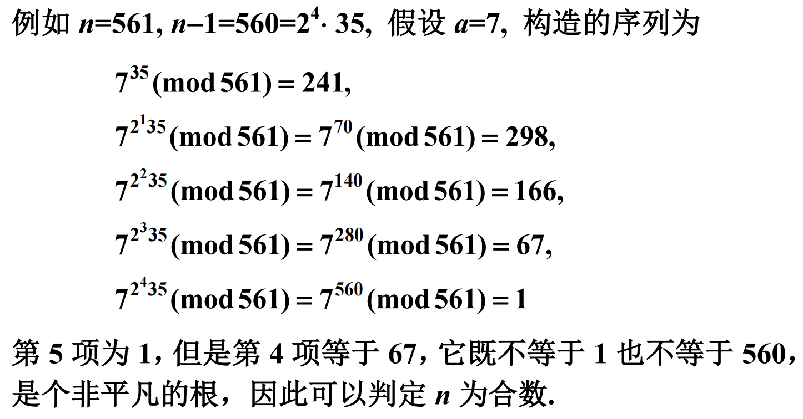
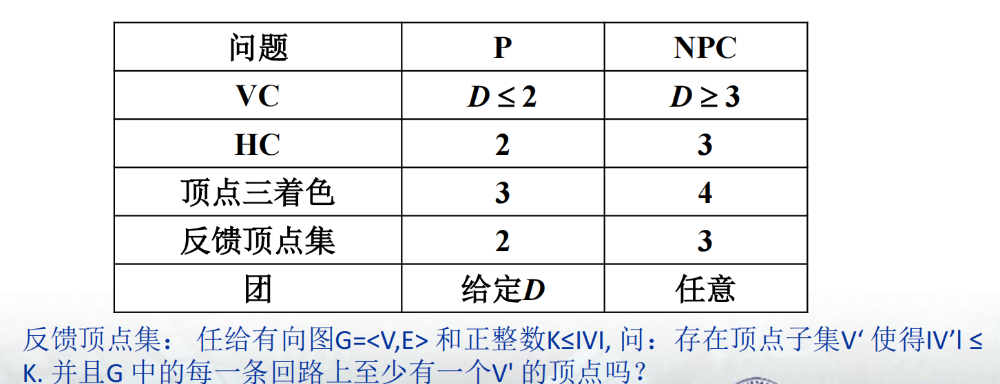

本文最后更新于 2026年7月18日 下午
北京大学信息科学技术学院
第十一章：随机算法
在经历了复杂度下限分析、NP完全、近似算法等一系列抽象内容的洗礼后，我们终于苦尽甘来，熬到了比较简单的一章：随机算法
Las Vegas型随机算法
随机快排
顾名思义，就是在选择pivot时随机选择一个元素，而不是每次固定选择某一个元素，然后递归的方式和普通快排相同
随机选取pivot，其位于排序后第i i i i = 0 , 1 , . . . , n − 1 i=0,1,...,n-1 i = 0 , 1 , ... , n − 1 1 n \dfrac{1}{n} n 1 T ( n ) = n − 1 + 1 n ( Σ i = 0 n − 1 T ( i ) + T ( n − i − 1 ) ) = n − 1 + 2 n Σ i = 1 n − 1 T ( i ) T(n)=n-1+\dfrac{1}{n}(\Sigma_{i=0}^{n-1} \ T(i)+T(n-i-1))=n-1+\dfrac{2}{n}\Sigma_{i=1}^{n-1}T(i) T ( n ) = n − 1 + n 1 ( Σ i = 0 n − 1 T ( i ) + T ( n − i − 1 )) = n − 1 + n 2 Σ i = 1 n − 1 T ( i ) T ( n ) ≤ 2 n l n n T(n) \le 2n ln n T ( n ) ≤ 2 n l nn n = 1 n=1 n = 1 1 , 2 , . . . n − 1 1,2,...n-1 1 , 2 , ... n − 1 n n n T ( n ) ≤ n − 1 + 2 n Σ i = 1 n − 1 2 i l n i ≤ n − 1 + 2 n ∫ 1 n 2 x l n x d x T(n)\le n-1+\dfrac{2}{n}\Sigma_{i=1}^{n-1}2ilni\le n-1+\dfrac{2}{n} \int_1^{n} 2xlnx \ dx T ( n ) ≤ n − 1 + n 2 Σ i = 1 n − 1 2 i l ni ≤ n − 1 + n 2 ∫ 1 n 2 x l n x d x ≤ n − 1 + 2 n l n n − n + 1 n ≤ 2 n l n n \le n-1+2n lnn-n+\dfrac{1}{n} \le 2nlnn ≤ n − 1 + 2 n l nn − n + n 1 ≤ 2 n l nn Θ ( n l o g n ) \Theta(n logn) Θ ( n l o g n ) 2 n l n n 2nlnn 2 n l nn
随机选择
从数组A A A p p p r r r k k k p = r p=r p = r p , r p,r p , r i i i j j j A [ i ] A[i] A [ i ] k ≤ j k\le j k ≤ j p p p p + j − 1 p+j-1 p + j − 1 k k k p + j p+j p + j r r r k − j k-j k − j
假设1 , 2 , . . . n 1,2,...n 1 , 2 , ... n k k k T ( n ) ≤ 2 n Σ i = n 2 n − 1 T ( i ) + O ( n ) T(n)\le \dfrac{2}{n}\Sigma_{i=\dfrac{n}{2}}^{n-1}T(i)+O(n) T ( n ) ≤ n 2 Σ i = 2 n n − 1 T ( i ) + O ( n ) T ( n ) ≤ c n T(n) \le cn T ( n ) ≤ c n
n皇后随机放置
对于每一行，先筛选出所有合法位置，再随机选一个位置放置皇后s t o p V e g a s stopVegas s t o p V e g a s n − s t o p V e g a s n-stopVegas n − s t o p V e g a s
对于不同的$ stopVegas 值，设 值，设
值，设 为算法成功概率 为算法成功概率
为算法成功概率 为一次成功搜索访问的结点数的平均值 为一次成功搜索访问的结点数的平均值
为一次成功搜索访问的结点数的平均值 为一次不成功搜索访问的结点数的平均值 为一次不成功搜索访问的结点数的平均值
为一次不成功搜索访问的结点数的平均值 为算法找到一个解的平均时间则 为算法找到一个解的平均时间
则 为算法找到一个解的平均时间则

Monte Calo型随机随机算法
主元素测试
我们将出现次数超过一半以上的元素称为主元素n n n T T T M ( T , n ) M(T,n) M ( T , n )
在1 , 2 , . . . n 1,2,...n 1 , 2 , ... n i i i x = T [ i ] x=T[i] x = T [ i ]
统计x x x T T T > n 2 > \dfrac{n}{2} > 2 n
显然这个算法是不准确的，如果回答true那倒好，说明确实有主元素，但如果回答false，难以断言就一定没有主元素k k k p + ( 1 − p ) p + . . . + ( 1 − p ) k − 1 p = 1 − ( 1 − p ) k p+(1-p)p+...+(1-p)^{k-1}p=1-(1-p)^{k} p + ( 1 − p ) p + ... + ( 1 − p ) k − 1 p = 1 − ( 1 − p ) k n 2 \dfrac{n}{2} 2 n x x x x x x p > 1 2 p> \dfrac{1}{2} p > 2 1 1 − ( 1 − p ) k > 1 − 2 − k 1-(1-p)^{k} > 1-2^{-k} 1 − ( 1 − p ) k > 1 − 2 − k

改进：对于任意给定ϵ > 0 \epsilon>0 ϵ > 0 ϵ \epsilon ϵ 2 − k ≤ ϵ 2^{-k} \le \epsilon 2 − k ≤ ϵ − k ≤ l o g ϵ -k \le log \epsilon − k ≤ l o g ϵ k ≥ − l o g ϵ k \ge -log \epsilon k ≥ − l o g ϵ k ≥ ⌈ l o g 1 ϵ ⌉ k \ge \lceil log\dfrac{1}{\epsilon} \rceil k ≥ ⌈ l o g ϵ 1 ⌉ k = ⌈ l o g 1 ϵ ⌉ k=\lceil log\dfrac{1}{\epsilon} \rceil k = ⌈ l o g ϵ 1 ⌉ k k k ϵ \epsilon ϵ
串相等测试
A A A x x x B B B y y y A , B A,B A , B x , y x,y x , y A A A x x x B B B B B B A , B A,B A , B A A A x x x f f f f ( x ) f(x) f ( x ) B B B B B B f ( y ) f(y) f ( y ) f ( x ) ≠ f ( y ) f(x) \neq f(y) f ( x ) = f ( y ) x ≠ y x \neq y x = y f ( x ) = f ( y ) f(x)=f(y) f ( x ) = f ( y ) x = y x=y x = y
我们假设x , y x,y x , y I ( x ) , I ( y ) I(x),I(y) I ( x ) , I ( y ) I p ( x ) = I ( x ) m o d p I_p(x)= I(x ) \ mod \ p I p ( x ) = I ( x ) m o d p A A A p p p I p ( x ) I_p(x) I p ( x ) B B B p p p p ∣ ( I ( x ) − I ( y ) ) p | (I(x)-I(y)) p ∣ ( I ( x ) − I ( y )) p p p x , y x,y x , y p ∣ ( I ( x ) − I ( y ) ) p | (I(x)-I(y)) p ∣ ( I ( x ) − I ( y ))
下面我们介绍关于素数的一些性质π ( t ) \pi(t) π ( t ) t t t π ( 20 ) = 8 ( 2 , 3 , 5 , 7 , 11 , 13 , 17 , 19 ) \pi(20)=8 \ (2,3,5,7,11,13,17,19) π ( 20 ) = 8 ( 2 , 3 , 5 , 7 , 11 , 13 , 17 , 19 ) π ( t ) ≈ t l n t \pi(t)\approx \dfrac{t}{lnt} π ( t ) ≈ l n t t k < 2 n k<2^n k < 2 n n n n k k k π ( n ) \pi(n) π ( n )

由此，我们可以估计出错概率

我们重复执行j j j M M M j = ⌈ l o g l o g n ⌉ j=\lceil loglogn \rceil j = ⌈ l o g l o g n ⌉ ( 1 n ) j ≤ 1 n ⌈ l o g l o g n ⌉ (\dfrac{1}{n})^j \le \dfrac{1}{n^{\lceil loglogn \rceil}} ( n 1 ) j ≤ n ⌈ l o g l o g n ⌉ 1
模式匹配
输入：二进制串x , y x,y x , y n , m n,m n , m n ≥ m n \ge m n ≥ m y y y x x x y y y O ( m n ) O(mn) O ( mn ) O ( m + n ) O(m+n) O ( m + n )
但是今天！我们要尝试用随机算法x ( j ) = x j x j + 1 . . . x j + m − 1 x(j)=x_jx_{j+1}...x_{j+m-1} x ( j ) = x j x j + 1 ... x j + m − 1 x ( j ) x(j) x ( j ) y y y I p ( x ( j ) ) I_p(x(j)) I p ( x ( j )) I p ( y ) I_p(y) I p ( y ) x ( j + 1 ) = 2 x ( j ) − 2 m x j + x j + m x(j+1)=2x(j)-2^mx_j+x_{j+m} x ( j + 1 ) = 2 x ( j ) − 2 m x j + x j + m W p = 2 m ( m o d p ) W_p=2^m(mod \ p) W p = 2 m ( m o d p ) I p ( x ( j + 1 ) ) = ( 2 I p ( x ( j ) ) − W p x j + x j + m ) ( m o d p ) I_p(x(j+1))=(2I_p(x(j))-W_px_j+x_{j+m})(mod \ p) I p ( x ( j + 1 )) = ( 2 I p ( x ( j )) − W p x j + x j + m ) ( m o d p ) I p ( x ( j ) ) I_p(x(j)) I p ( x ( j )) I p ( x ( j + 1 ) ) I_p(x(j+1)) I p ( x ( j + 1 ))
于是我们有如下算法：M M M p p p j j j 1 1 1 n − m + 1 n-m+1 n − m + 1 I p ( x ( j ) ) = I p ( y ) I_p(x(j))=I_p(y) I p ( x ( j )) = I p ( y )
时间复杂度O ( m + n ) O(m+n) O ( m + n )

素数测试
首先我们来学习一下，如何“优雅”地求x x x m m m x x x m = d k d k − 1 . . . d 1 m=d_kd_{k-1}...d_1 m = d k d k − 1 ... d 1
算法如下：
1 2 3 4 5 6 y=1for j in range(k,0):if d_j==1:return y
接下来我们更进一步，计算a m o d n a \ mod \ n a m o d n m m m a , m , n a,m,n a , m , n m ≤ n m \le n m ≤ n m = d k d k − 1 . . . d 1 m=d_kd_{k-1}...d_1 m = d k d k − 1 ... d 1
1 2 3 4 5 6 y=1for j in range(k,0):if b_j==1:return y
可以看出其实就加了mod n 这一步T ( n ) = O ( k l o g 2 n ) = O ( l o g 3 n ) T(n)=O(k log^{2} n)=O(log^{3} n) T ( n ) = O ( k l o g 2 n ) = O ( l o g 3 n )
接下来我们终于可以开始素数测试了n n n a m o d n ≠ 0 a \ mod \ n \neq 0 a m o d n = 0 a n − 1 ≡ 1 ( m o d n ) a^{n-1} \equiv 1 (\ mod \ n) a n − 1 ≡ 1 ( m o d n )
于是我们有了一个粗糙算法：2 n − 1 ≡ 1 ( m o d n ) 2^{n-1} \equiv 1 (\ mod \ n) 2 n − 1 ≡ 1 ( m o d n ) n n n a = 2 a=2 a = 2 n = 341 n=341 n = 341 n n n
于是我们进行改进，随机选取for a in range(2,n)，例如取a = 3 a=3 a = 3 n n n a a a n n n n n n Carmichael数 ，如 561，1105，1729，2465 等10 8 10^8 1 0 8
在费马小定理之外，我们给出另一个必要条件：n n n x 2 ≡ 1 ( m o d n ) x^{2} \equiv 1 (\ mod \ n) x 2 ≡ 1 ( m o d n ) x = 1 x=1 x = 1 x = − 1 x=-1 x = − 1 非平凡的 ，如果方程有非平凡的根，则n n n n n n n − 1 n-1 n − 1 n − 1 = 2 q m ( q ≥ 1 ) n-1=2^qm(q \ge 1) n − 1 = 2 q m ( q ≥ 1 ) 在mod n 意义下 ，我们构造序列a m , a 2 m , a 4 m , . . . , a 2 q m a^m,a^{2m},a^{4m},...,a^{2^qm} a m , a 2 m , a 4 m , ... , a 2 q m a n − 1 a^{n-1} a n − 1
随机选取a ∈ [ 2 , 3 , . . . , n − 1 ] a \in [2,3,...,n-1] a ∈ [ 2 , 3 , ... , n − 1 ]
对于任意i = 0 , 1 , . . . q − 1 i=0,1,...q-1 i = 0 , 1 , ... q − 1 a 2 i m m o d n a^{2^im} \ mod \ n a 2 i m m o d n
如果其后项为1，但它本身不为1和n-1，则它就是非平凡根，从而知道n n n

上面为一个实例，该算法被称为Miller-Rabin算法 q , m q,m q , m n − 1 = 2 q m n-1=2^qm n − 1 = 2 q m O ( l o g n ) O(log n) O ( l o g n ) O ( l o g 3 n ) O(log^3 n) O ( l o g 3 n ) k k k 2 − k 2^{-k} 2 − k k = ⌈ l o g n ⌉ k= \lceil logn \rceil k = ⌈ l o g n ⌉ 2 − k ≤ 1 n 2^{-k} \le \dfrac{1}{n} 2 − k ≤ n 1 1 − 1 n 1-\dfrac{1}{n} 1 − n 1 n n n n n n 1 − 1 n 1-\dfrac{1}{n} 1 − n 1 k k k 总时间复杂度O ( l o g 4 n ) O(log^4 n) O ( l o g 4 n )
两种算法的对比与总结
Las Vegas型
Las Vegas型随机算法主要是修改确定性算法得到，一般把某一步确定性选择变为随机选择，可以与确定性算法相结合使用，有可能改进确定性算法的平均时间复杂度有效的 Las Vegas型随机算法
Monte Calo型
Monte Calo型随机算法不但运行时间是随机变量，而且计算结果也是随机事件1 3 \dfrac{1}{3} 3 1 有效的Monte Calo型随机算法 1 3 \dfrac{1}{3} 3 1
单侧错误和双侧错误
弃真型 单侧错误：当算法宣布接受时结果一定对，宣布拒绝时不一定对，例如主元素测试取伪型 单侧错误：算法宣布拒绝时结果一定对，宣布接受时不一定对，例如素数测试双侧 错误：在所有输入上同时出现上述两种不同的错误
随机算法的分类与局限性
Las Vegas型中，我们有零错误概率多项式时间算法(有效的)，称为ZPP BPP RP ，取伪型称为coRP
处理难解问题的策略
严格来说这是第十二章的内容了，不过老师也没细讲，在此就并入十一章中，简单带过
对问题施加限制
例如SAT问题，限制成2SAT ，它就是P类问题了HornSAT (输入限制为霍恩公式，析取式中正文字，即不带否定号的变量，至多出现一次)，那么也变成了P类问题

固定参数算法
通常把优化问题转化为判定问题时，都会在输入中引入一个参数G G G K K K G G G K K K k k k ( G , k ) (G,k) ( G , k ) k k k O ( k n k + 1 ) = O ( 2 k k n ) O(kn^{k+1})=O(2^k kn) O ( k n k + 1 ) = O ( 2 k k n ) O ( 2 k k n ) O(2^k kn) O ( 2 k k n ) k k k
改进的指数时间算法
我们用O ∗ O^{\ast} O ∗ O ∗ ( 2 n ) = O ( n O ( 1 ) 2 n ) O^{\ast}(2^n)=O(n^{O(1)}2^n) O ∗ ( 2 n ) = O ( n O ( 1 ) 2 n ) O ∗ ( 2 n ) O^{\ast}(2^n) O ∗ ( 2 n ) ∀ 1 < c < 2 \forall 1<c<2 ∀1 < c < 2 O ∗ ( c n ) O^{\ast}(c^n) O ∗ ( c n ) 非平凡(改进)的指数时间算法 O ∗ ( 1.8393 n ) O^{\ast}(1.8393^n) O ∗ ( 1.839 3 n )
指数时间假设 ：对于任意正整数k k k c k > 0 c_k>0 c k > 0 2 c k n 2^{c_kn} 2 c k n O ∗ ( 3 n ) O^{\ast}(3^n) O ∗ ( 3 n ) O ∗ ( 2 n 2 ) O^{\ast}(2^{\dfrac{n}{2}}) O ∗ ( 2 2 n ) O ∗ ( 2 n ) O^{\ast}(2^n) O ∗ ( 2 n )
其他处理难解问题的策略
启发式方法 ：无法从理论上给出任何性能保证，但在实践中偏偏效果良好，就统称为启发式方法，常用的有回溯与分支限界法、局部搜索法(随机化策略、重启策略、模拟退火)、遗传算法等平均复杂度 ：有些NPC问题在考虑平均复杂度时是易解的，例如哈密顿回路的平均情况对图G ( n , 1 2 ) G(n,\dfrac{1}{2}) G ( n , 2 1 ) O ( n 3 ) O(n^3) O ( n 3 ) 1 2 \dfrac{1}{2} 2 1 G ( n , p ) G(n,p) G ( n , p ) n n n p p p 难解算例生成 ：确定紧实例
笔者按：这一讲ppt内容和课本大有不同，不过本质上都不难理解，属于是在前面四章超高强度之后一个非常好的放松……最后还小小补充了第十二章，终于是将算分后半学期的笔记更新完毕了，准备好迎接无情的期末吧